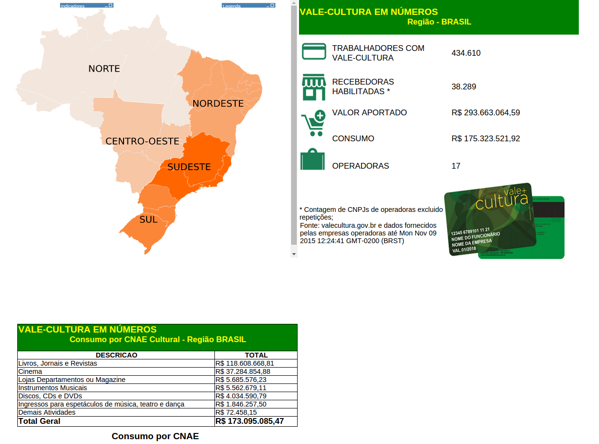
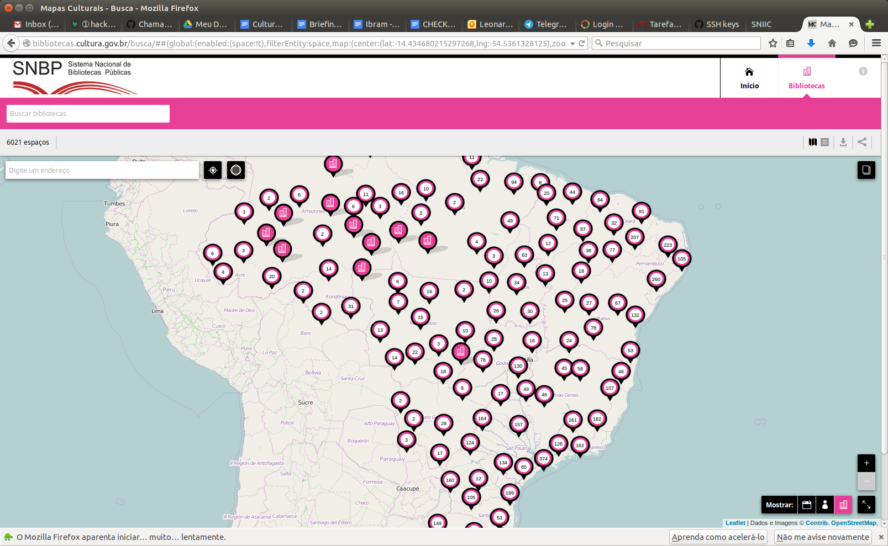

SNIIC
Sistema Nacional de Informações e Indicadores Culturais
O que era
- Um sistema informático
- Um cadastro
- Um site
- Demanda informação
- Não retorna valor
O que é
- O Sistema de Informações e Indicadores do MinC
- Agregador e Integrador de informações
- Auxilia as áreas na sistematização de informações
- Oferece tecnologia, infra-estrutura e metodologia
- Integra as informações já sistematizadas
- Gera valor para o gestor e para a sociedade
3 dimensões
- Programática
- Metodológica
- Tecnológica
Módulos do SNIIC
- Dados.cultura.gov.br
- Vocabulários.cultura.gov.br
- Publicações.cultura.gov.br
- Indicadores.cultura.gov.br
- Mapas.cultura.gov.br
O problema dos cadastros
- Geram retrabalho
- Informações superficiais
- Informações desatualizadas
Indicadores (em construção)

Três dificuldades da gestão cultural
- Falta de informações
- Falta de memória
- Dificuldade de comunicação
Como fazer um "cadastro vivo"?
Gestão + Comunicação = Informação
Como fazer um "cadastro vivo"?
Informação deve ser gerada no dia a dia da gestão
Como fazer um "cadastro vivo"?
Informação deve ser gerada e mantida pelo responsável direto por ela, na ponta
Como fazer um "cadastro vivo"?
Tanto gestores quanto sociedade
12 anos de História
Daniel Pádua
Xemelê
MapSys
Conversê
Mapas da Rede
Cleodon Silva
Registro Aberto da Cultura - SNIIC
Arte Fora do Museu
Mapas de Vista
Mapa da Cultura de Fortaleza
Mapa Digital da Cultura do Rio Grande do Sul
Mapas Culturais
Usado em
São Paulo, Blumenau, São José dos Campos, Sobral, João Pessoa, RS, CE, TO
Em implementação
Santo André, SP, TO, MT e Uruguai
Onde queremos chegar
- Integração mantendo as identidades
- Portais temáticos
- Uma biblioteca, que é também um ponto de cultura, e que está dentro de um museu, é a mesma nas três base de dados, e é mantida pela mesma pessoa
- Calendário nacional de eventos
- Acervos
- Primeiro case: Bibliotecas
Cadastro Nacional de Bibliotecas

ID da Cultura
Identidade Digital Cidadã
Experiência do "Login Cidadão"
Glossário da Cultura
Modelo de Governança Colaborativa
Parceria com UFG
Dezembro 2015
Forum Internacional de Gestão da Informação no campo da Cultura
- Disponibilização de:
- Patrimônios materiais
- Cadastro Nacional de Museus
- Cadastro Nacional de Bibliotecas Públicas
- Cineclubes e salas de cinema
- Rede Cultura Viva - Pontos de Cultura
- Estabelecimentos que aceitam Vale Cultura
- Praças CEUs
- Incubadoras Brasil Criativo
Dezembro 2015
Forum Internacional de Gestão da Informação no campo da Cultura
- Transparência:
- Vale Cultura
- Lei Rouanet
- Público e Bilheteria do cinema
2016
- Avanço na transparência
- Suporte a estados e municípios
- Formação de gestores
- Integraçao dos mapas federados
- Incentivo a cartografia
- Incentivo ao desenvolvimento de aplicações derivadas
Obrigado
sniic@cultura.gov.br